Лабораторная работа №3
Шаг 1. Разместить на рабочем поле коммутатор и два компьютера и соединить их.
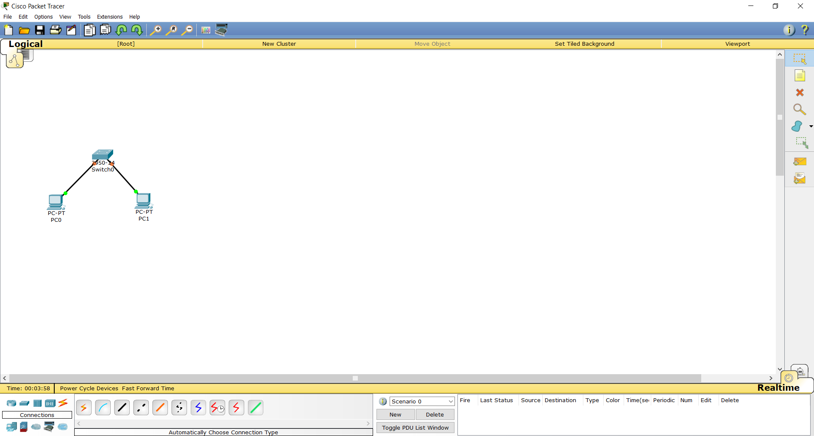Шаг 2. Подключить консольный кабель для настройки оборудования.
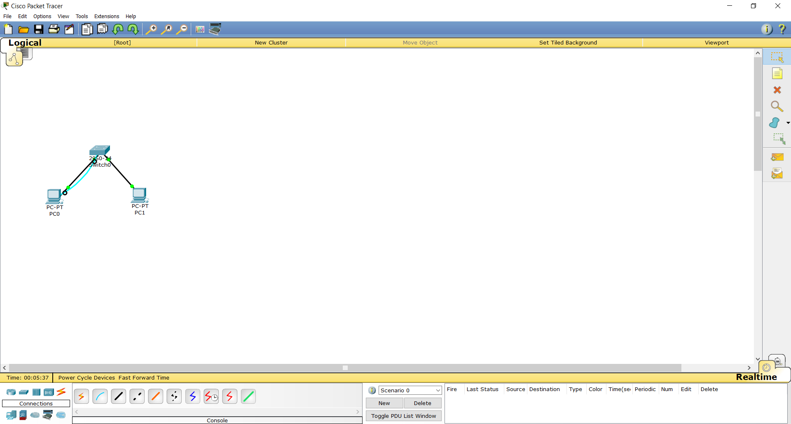Шаг 3. Настроить адресацию на добавленных компьютерах согласно таблице ниже без шлюза по умолчанию.
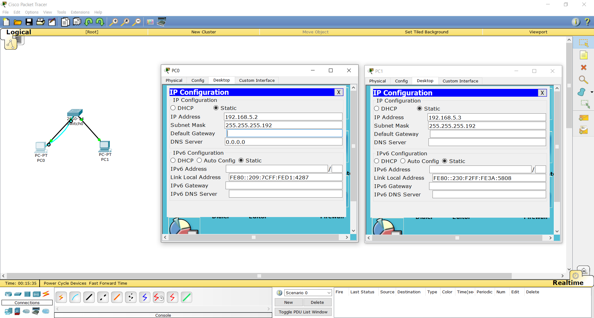Шаг 4. Выполнить проверку работоспособности сети.
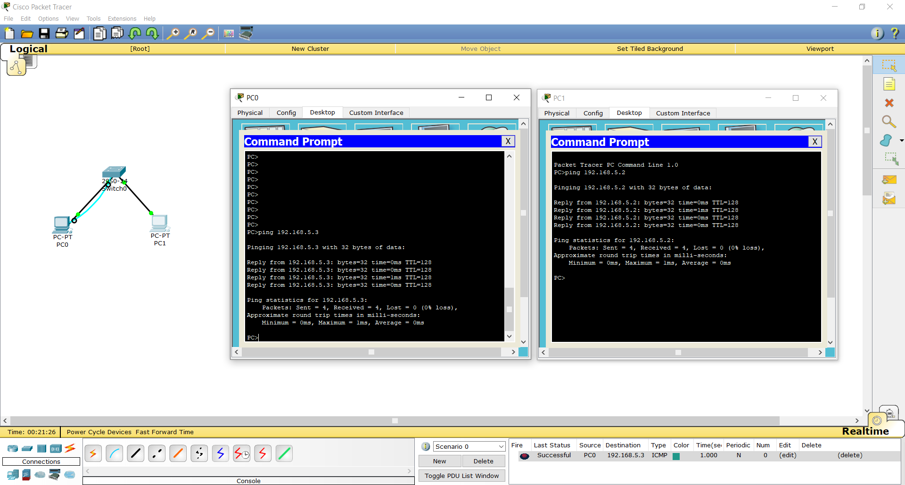Шаг 5. Добавить на рабочее поле еще один коммутатор с двумя компьютерами и настроить адресацию из другой подсети.
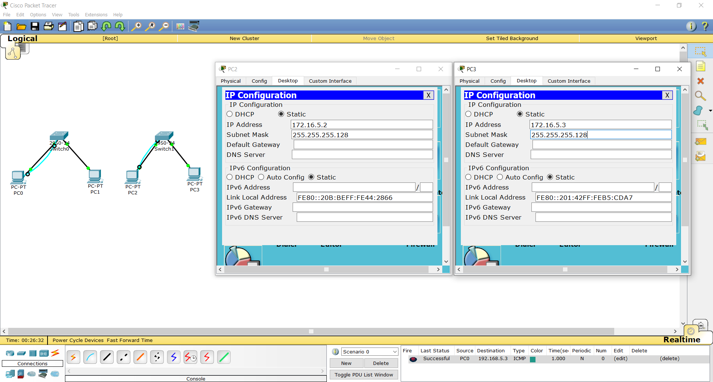Шаг 6-7. Соединить коммутаторы между собой и проверить работоспособность сети. В случае неработоспособности сети объяснить причины.
Комментарий: Коммутатор работает на втором (канальном) уровне модели OSI и предназначен для соединения нескольких узлов компьютерной сети в пределах одного или нескольких сегментов сети. За передачу пакетов между разными сетями отвечает маршрутизатор, который работает на третьем (сетевом) уровне модели OSI.
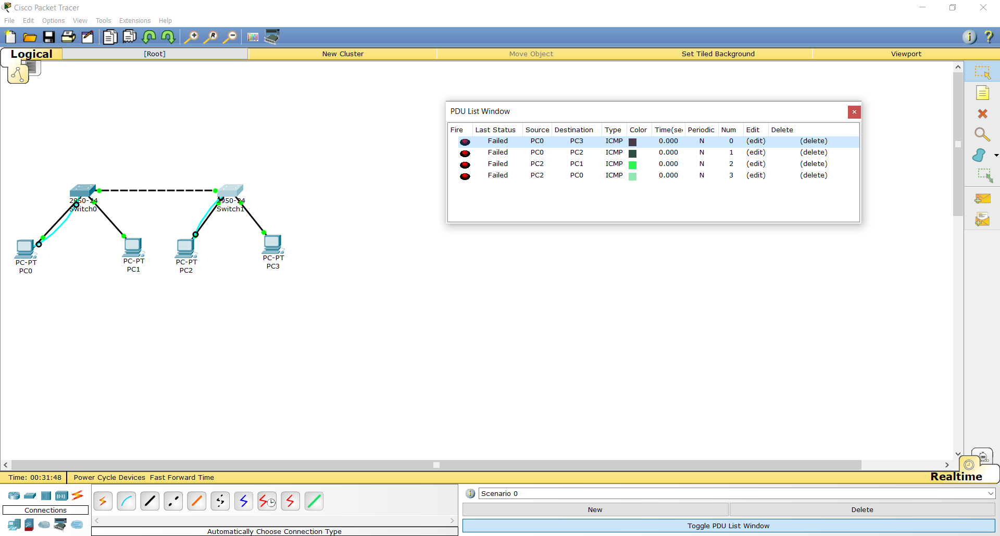Шаг 8. Добавить маршрутизатор на рабочее поле.
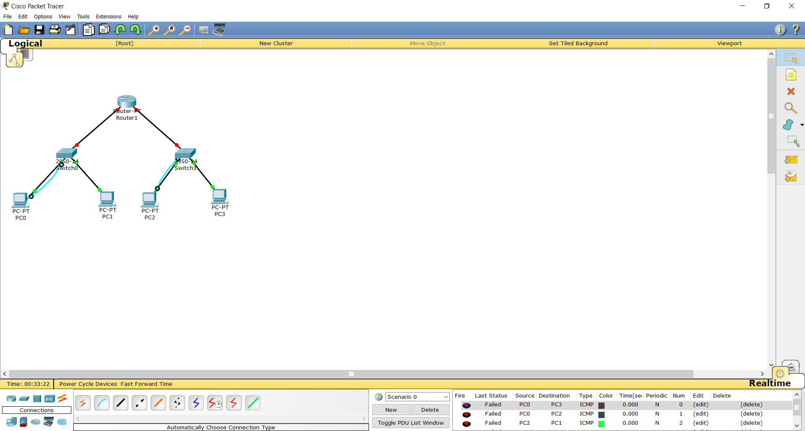Шаг 9. Настроить интерфейсы маршрутизатора для существующих подсетей.
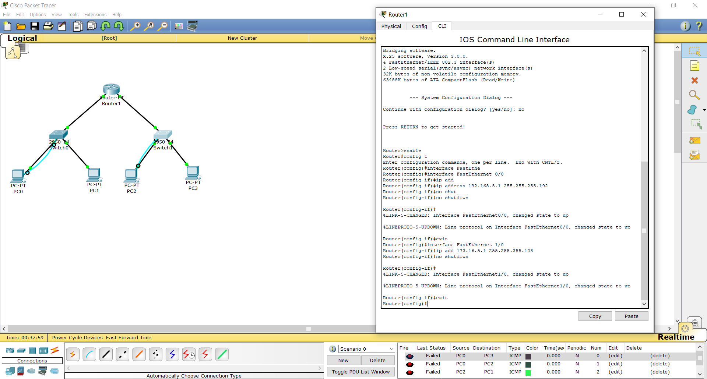Шаг 10-11. Проверить работоспособность сети. В случае неработоспособности сети объяснить причины.
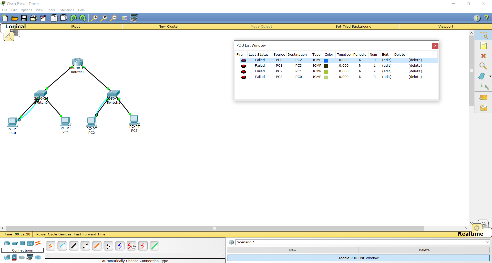Шаг 12. Указать шлюз по умолчанию и отправить сообщение.
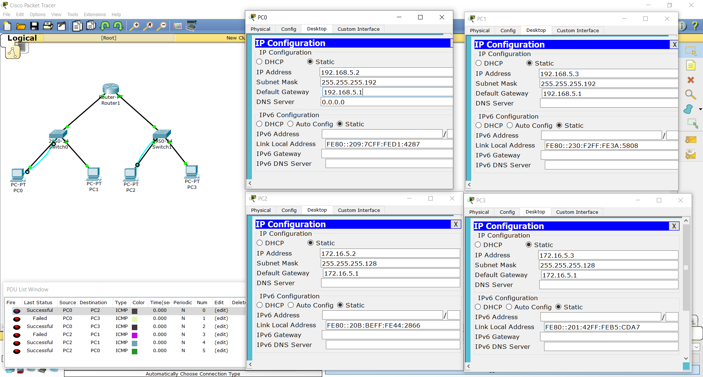Шаг 13. Добавить на рабочее поле еще один маршрутизатор.
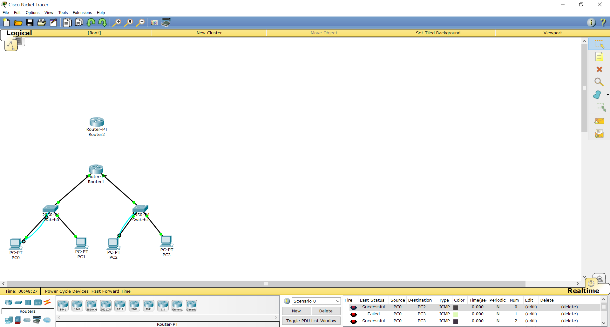Шаг 14. Подключить к нему коммутатор и компьютер.
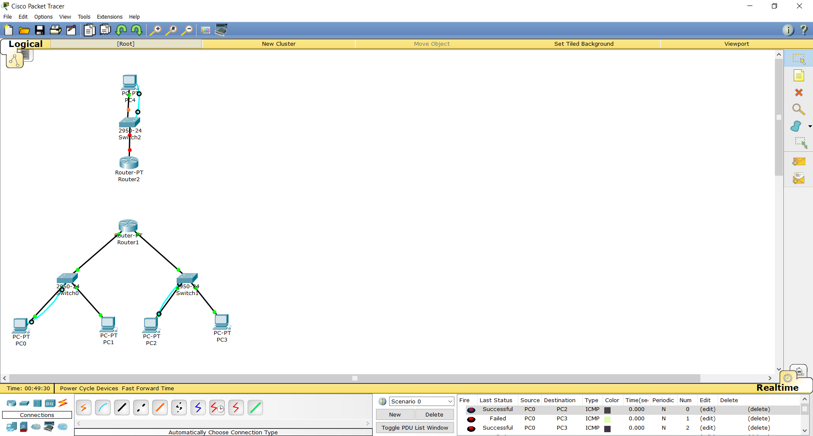Шаг 15. Настроить сетевые настройки согласно таблице ниже.
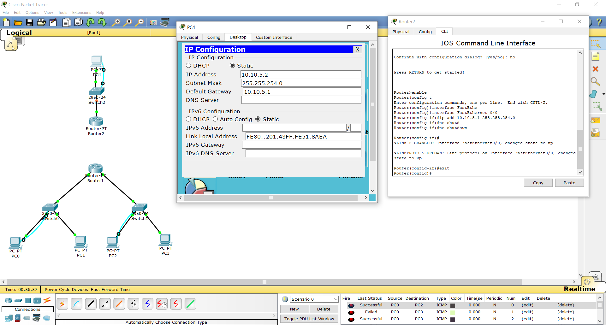Шаг 16. Соединить между маршрутизаторы и настроить между ними сеть с префиксом /30.
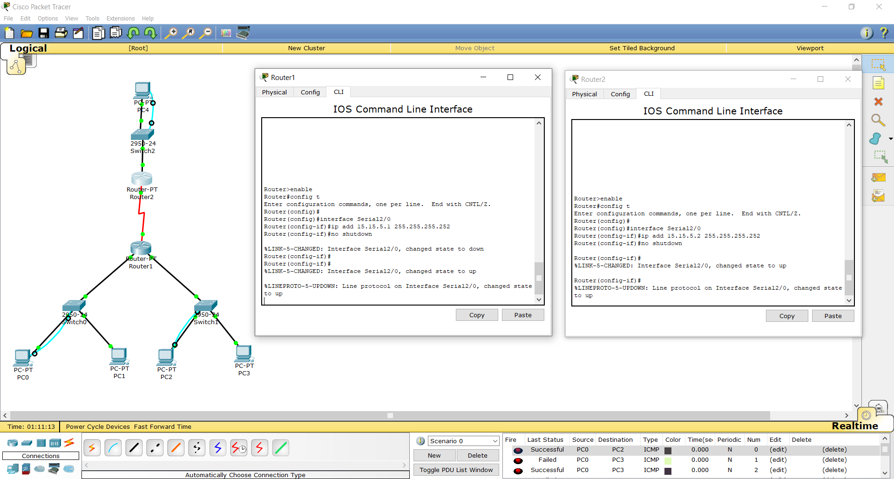Шаг 17-18. Проверить работоспособность сети, отправив сообщение сети A в сеть С и из сети В в сеть С. В случае неработоспособности сети объяснить причины.
Комментарий: Не работает потому что не настроена статическая маршрутизация.
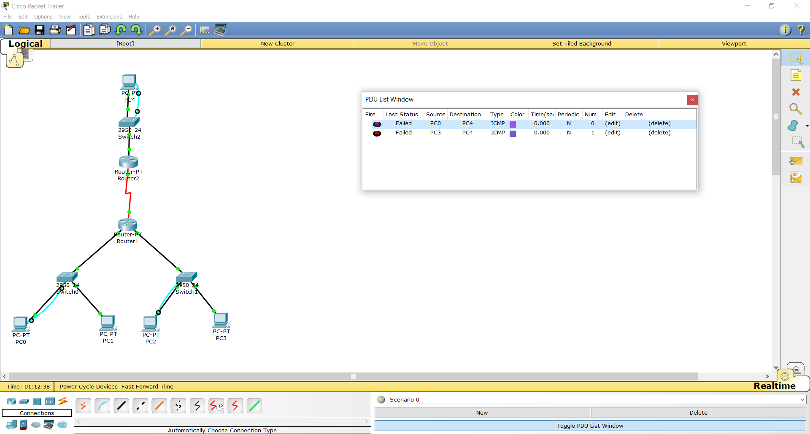